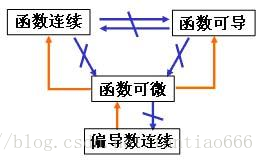

“让我留下吧，”他说，“浴室里确实有香皂。”
反常积分
定义
如果函数$f$定义在$[a,+\infin)$上，且在任意闭区间$[a,u]$上可积，且$\lim_{u\rightarrow \infin}\int_{a}^uf(x)dx$该极限收敛，则记该极限为$\int_{u}^{\infin}f(x)dx$，称为无穷积分。
如果函数$f$定义在$(a,b]$上，且在a的任意右邻域无界，且在任意闭区间$[u,b]\sub(a,b]$上可积，且$\lim_{u\rightarrow a}\int_{u}^bf(x)dx$收敛，则记该极限为$\int_{a}^bf(x)dx$，称为瑕积分，其中a是瑕点。
性质
无穷积分
柯西准则
- 无穷积分$\int_a^{+\infin} f(x)dx$收敛$\Leftrightarrow$任给$\epsilon>0$，存在$G\geq a$，使得$\forall u_1,u_2\in(G,+\infin)$，恒：
线性性质、区域可加、绝对收敛
线性性质：加号可拆，数乘可提。
绝对收敛：
若$f$在任何有限区间$[a,u]$上可积，且有$\int_a^{+\infin}|f(x)|dx$收敛，则有$\int_a^{+\infin}f(x)dx$收敛，且$\int_a^{+\infin}f(x)dx\leq\int_a^{+\infin}|f(x)|dx$
但反之不成立，称$\int_a^{+\infin}f(x)dx$收敛但$\int_a^{+\infin}|f(x)|dx$不收敛的无穷积分为条件收敛。
瑕积分
柯西准则
- 瑕积分$\int_a^bf(x)dx$收敛（a为瑕点）$\Leftrightarrow$任给$\epsilon>0$，存在$\delta>0$，使得$\forall u_1,u_2\in(a,a+\delta)$，恒有：
线性性质、区域可加、绝对收敛
两个重要反常积分
- 对于无穷积分$\int_1^{+\infin}\frac{dx}{x^p}$，当$p>1$时收敛，$p\leq 1$时发散。
- 对于瑕积分$\int_a^b\frac{dx}{(x-a)^p}$，当$0<p<1$时收敛，$p\geq 1$时发散。
收敛判别法
无穷积分
比较法则
- 若$f,g$都在任何有限区间$[a,u]$上可积，$g(x)>0$，且有$\lim_{x\rightarrow+\infin}\frac{|f(x)|}{g(x)}=c$，
- 当$0<c\neq +\infin$时，$\int_a^{+\infin}|f(x)|dx$与$\int_a^{+\infin}g(x)dx$同敛散
- 当$c=0$时，由$\int_a^{+\infin}g(x)dx$收敛可推出$\int_a^{+\infin}|f(x)|dx$收敛
- 当$c=+\infin$时，由$\int_a^{+\infin}g(x)dx$发散可推出$\int_a^{+\infin}|f(x)|dx$发散。
柯西判别法
- 设$f$定义于$[a,+\infin)$，在任何有限区间$[a,u]$上可积，且$\lim_{x\rightarrow +\infin}x^p|f(x)|=\lambda$，则有：
- $p>1,0\leq\lambda<+\infin$时，$\int_a^{+\infin}|f(x)|dx$收敛
- $p\leq 1,0<\lambda\leq+\infin$时，$\int_a^{+\infin}|f(x)|dx$发散
迪利克雷判别法
若$F(u)=\int_a^uf(x)dx$在$[a,+\infin)$上有界,
$g(x)$在$[a,+\infin)$上单调且趋于0,
则有$\int_a^{+\infin}f(x)g(x)dx$收敛。
阿贝尔判别法
若$\int_a^{+\infin}f(x)dx$收敛，
$g(x)$在$[a,+\infin)$单调有界，
则有$\int_a^{+\infin}f(x)g(x)dx$收敛。
瑕积分
比较法则
把无穷积分中的趋近于正无穷改成趋近于a
柯西判别法
- 设$f$定义于$(a,b]$，在任何有限区间$[u,b]\sub(a,b]$上可积，且$\lim_{x\rightarrow a}(x-a)^p|f(x)|=\lambda$，则有：
- $0<p<1,0\leq\lambda<+\infin$时，$\int_a^{+\infin}|f(x)|dx$收敛
- $p\geq 1,0<\lambda\leq+\infin$时，$\int_a^{+\infin}|f(x)|dx$发散
迪利克雷判别法
若$F(u)=\int_u^bf(x)dx$在$(a,b]$上有界,
$g(x)$在$x\rightarrow a^+$时单调且趋于0,
则有$\int_a^{b}f(x)g(x)dx$收敛。
阿贝尔判别法
若$\int_a^{b}f(x)dx$收敛，
$g(x)$在$(a,b]$单调有界，
则有$\int_a^{b}f(x)g(x)dx$收敛。
数项级数
数项级数敛散性
定义
- 若数项级数的部分和$\{S_n=\sum_{i=1}^na_i\}$收敛于S，即$\lim_{n\rightarrow+\infin}S_n=S$，则称该数项级数收敛。
柯西准则
数项级数$u_1+u_2+…$收敛$\Leftrightarrow$任给$\epsilon>0$，存在正整数$N$，使得对任意$n>m>N$，都有：
特别地，数项级数收敛的一个必要条件是$\lim_{n\rightarrow+\infin}u_n=0$
基本性质
线性性：收敛的数项级数数乘和加减结果仍收敛。
去掉，增加，改变有限个项并不影响级数敛散性。
在收敛级数中任意加括号，分组形成的新的级数敛散性不变，级数和也不变。反之不成立，例如：
两个重要级数
- $\sum_{n=0}^{+\infin}aq^n=\frac{a}{1-q}$，当且仅当$|q|<1$收敛。
- 调和级数$1+\frac{1}{2}+…+\frac{1}{n}+…$发散。
正项级数
敛散性判别
充要条件
- 正项级数$\sum u_n$收敛的充要条件是部分和$\{S_n\}$有界。
比较原则
若$\{u_n\},\{v_n\}$是两个正项级数，且$\lim_{n\rightarrow+\infin}\frac{u_n}{v_n}=l$，则
- $0<l<+\infin$时，两级数同敛散
- $l=0$时，$\sum v_n$收敛可推出$\sum u_n$收敛
- $l=+\infin$时，$\sum v_n$发散可推出$\sum u_n$发散
常常跟等比级数和p级数比较：
$\sum\frac{1}{n^p}$，$p>1$收敛，$0\leq p\leq 1$时发散。
比式判别法
若$\lim_{n\rightarrow+\infin}\frac{u_{n+1}}{u_n}=q$，则
- $q<1$时，级数$\sum u_n$收敛
- $q>1$时，级数$\sum u_n$发散
注：即使极限不存在，但如果可以证明$\frac{u_{n+1}}{u_n}$恒小于1，也可以证明收敛。
根式判别法
- 若$\lim_{n\rightarrow+\infin}\sqrt[n]{u_n}=l$，
- $l<1$，级数$\sum u_n$收敛
- 若$l\geq 1$，级数$\sum u_n$发散
拉贝判别法
- 若$\lim_{n\rightarrow+\infin}n(1-\frac{u_{n+1}}{u_n})=r$，则
- $r>1$时，级数$\sum u_n$收敛，
- $r<1$时，级数$\sum u_n$发散
积分判别法
- 设$f$是$[1,+\infin)$上非负递减函数，则正项级数$\sum_{n=1}^{+\infin}f(n)$于反常积分$\int_1^{+\infin}f(x)dx$同敛散。
一般项级数
交错级数
莱布尼茨判别法
- 若$u_n>0$，且单调趋于0，则交错级数$\sum (-1)^{n+1}u_n$收敛。
- 若满足莱布尼茨判别饭，有$|\sum_{i=n+1}^{+\infin}u_i|\leq u_{n+1}$
级数重排
重排定理
- 若一般项级数$\sum u_n$绝对收敛，则将其任意重排后仍绝对收敛，且级数和不变。
黎曼定理
- 若一般项级数$\sum u_n$条件收敛，则对于任意数A，存在一种重排方案使得$\sum v_n=A$，特别地，也可以找到一种重排方案使级数发散。
柯西定理
- 若$\sum u_n,\sum v_n$都绝对收敛，且$\sum|u_n|=A,\sum|v_n|=B$，则对所有乘积$u_iv_j$的任意重排得到的级数均绝对收敛，且绝对收敛和为$AB$。
*阿贝尔变换和引理
$\sum\epsilon_iv_i=(\epsilon_1-\epsilon_2)\delta_1+(\epsilon_2-\epsilon_3)\delta_2+…$
其中$\delta_k=v_1+…v_k$
特别的，若$\epsilon_i$单调，且$|\delta_k|\leq A$有界，则有
阿贝尔判别法
若$\{a_n\}$单调有界
且$\sum b_n$收敛
则$\sum a_nb_n$收敛
迪利克雷判别法
若$\{a_n\}$单调递减，且$\lim_{n\rightarrow+\infin}a_n=0$
且$\{b_n\}$部分和有界
则$\sum a_nb_n$收敛
函数列与函数项级数
函数列
收敛点：若$\{ f_n(x_0)\}$收敛，则称$x_0$为该函数项列的一个收敛点
收敛域：收敛点的集合
极限函数：若函数项级数$\{f_n(x)\}$在数集上每一点都收敛，则$f(x)=\lim_{n\rightarrow+\infin}f_n(x)$称为该函数列极限函数。
一致收敛性
若对于任意$\epsilon>0$，存在正整数$N$，使得对于任意$n>N$，有：
对于任意$x\in D$，$|f_n(x)-f(x)|<\epsilon$，则称函数列在$D$上一致收敛于$f(x)$，记作$f_n(x)\rightrightarrows f(x),x\in D$.
柯西准则
函数列$\{f_n\}$在D上一致收敛$\Leftrightarrow$对于任给$\epsilon>0$，总存在正整数$N$，使得对于任意$n,m>N$，对于任意$x\in D$，恒有
余项准则
- 函数列$\{f_n\}$在D上一致收敛$\Leftrightarrow$
函数项级数
- 函数项级数的部分和是一个函数列
- 函数项级数的敛散性可以转化为其部分和（函数项级数）的敛散性
一致收敛性
柯西准则
- $\sum u_n(x)$在数集D上一致收敛的充要条件是：对于任意$\epsilon>0$，总存在正整数$N$，使得对于任意$n,m>N,x\in D$,恒有：
余项准则
- $\sum u_n(x)$在数集D上一致收敛的充要条件是：
优级数判别法
- 若对于任意$x\in D,n$，恒有$|u_n(x)|\leq M_n$，其中$\sum M_n$为收敛的正项级数，则$\sum u_n(x)$在D上一致收敛。
阿贝尔判别法
若$\sum u_n(x)$在D上一致收敛
且对于每个$x\in D$，$v_n(x)$都关于n单调，且$v_n(x)$关于x一致有界(即对于所有的$x\in D$都有个公共的M，使得$|v_n(x)|\leq M$)
则$\sum u_n(x)v_n(x)$在D上一收敛
迪利克雷判别法
若$u_n(x)$的部分和函数列$\{U_n(x)\}$在D上一致有界
且对于每个$x\in D$，$v_n(x)$关于n单调，且在D上$v_n(x)\rightrightarrows 0$
则$\sum u_n(x)v_n(x)$在D上一致收敛
必要条件
- 函数项级数$\sum u_n(x)$在D上一致收敛的必要条件是函数列$\{u_n(x)\}$在D上一致收敛于0.
一致收敛的函数列与函数项级数的性质
一致收敛的函数列性质
极限交换
- 设函数列$\{f_n\}$在$(a,x_0)\cup(x_0,b)$上一致收敛于$f(x)$，且对每个n，都有$\lim_{x\rightarrow x_0}f_n(x)=a_n$，则有
连续性
若函数列$\{f_n(x)\}$在D上一致收敛，且其每一项都在D上连续
则其极限函数都在D上连续。
可积性
- 若函数列$\{f_n(x)\}$在闭区间D上一致收敛，且其每一项都在D上连续，则
可微性
- 若函数列$\{f_n(x)\}$在闭区间D上处处收敛，且其每一项在D上都有连续的导数，则
补充说明：处处收敛却不一致收敛的例子
一致收敛的函数项级数性质
逐项求极限
- 若函数项级数$\sum u_n(x)$在$x_0$的一个去心邻域上一致收敛，且对于每一个n都有$\lim_{x\rightarrow x_0}u_n(x)=a_n$，则有
连续性定理
- 若函数项级数$\sum u_n(x)$在闭区间D上一致收敛，且每一项都连续，则其和函数$S(x)$也在闭区间D上连续。
逐项求积
- 若函数项级数$\sum u_n(x)$在闭区间D上一致收敛，且每一项都连续，则有
逐项求导
- 若函数项级数$\sum u_n(x)$在闭区间D上处处收敛，且每一项在D上都有连续的导数，且$\sum u’_n(x)$在D上一致收敛，则有
幂级数
- 定义：形如$\sum_{n=0}^\infin a_nx^n$，也可以看作函数项级数，$u_n(x)=a_nx^n$
收敛性与收敛半径
阿贝尔定理
若幂级数在$\bar{x}\neq 0$处收敛，则对于所有的$x,|x|<|\bar{x}|$，幂级数在$x$处收敛。
反之，若幂级数在$\bar{x}\neq 0$处发散，则对于所有的$x,|x|>|\bar{x}|$，幂级数在$x$处发散。
由阿贝尔定理，幂级数的收敛域一定是以原点为中心，形如$(-R,R)$的一个区间，其中R称为收敛半径。对于所有$x\in(-R,R)$，幂级数均收敛，对于所有$x>R或x<-R$，幂级数均发散。但$x=R和x=-R$是否收敛需要单独验证。
收敛半径求法
对于幂级数，若有$\lim_{n\rightarrow\infin}\frac{|a_{n+1}|}{|a_n|}=\rho$，或$\lim_{n\rightarrow \infin}\sqrt[n]{|a_n|}=\rho,\bar{\lim_{n\rightarrow \infin}}\sqrt[n]{|a_n|}=\rho(最大值)$，(条件等价)，都有：
$R=\frac{1}{\rho}$。（注：$\frac{1}{\infin}=0,\frac{1}{0}=\infin$)
幂级数性质
内闭一致收敛性
- 幂级数在其收敛域的任意子闭区间上一致收敛。
连续性，可积性，可导性
- 幂级数的和函数在其收敛域上连续可导，在收敛于任一闭子区间可积。
逐项求极限、求积分、求导
- 注：逐项求导逐项求积分后得到的幂级数收敛半径不变，仍为R。但边界处（$x=\pm R$）的敛散性可能变化。
幂级数的运算
- 泰勒级数，麦克劳林级数均为幂级数。
傅里叶级数
正交函数系
若函数列$\{\phi_n(x)\}$满足：
$\phi_n(x)$在$[a,b]$上可积
则称这个函数列为$[a,b]$的一个正交函数系。
特别地，$[-\pi,\pi]$上的正交三角函数系：
$[-l,l]$上的正交三角函数系：
傅里叶级数
设$f$是周期为$2l$在$[-l,l]$上可积的函数，则称
为$f$在三角函数系下的傅里叶级数，其中
特别地，f是偶函数时，又$b_n\equiv 0$，f是奇函数时，$a_n\equiv 0$
注意函数展开时，需要将函数延拓致周期函数。
收敛定理
- 设$f$为周期为$2l$的函数，在$[-l,l]$上按段光滑（只有有限个跳跃间断点，其余连续）：则有，对于某个$x_0$
- 若$f(x)$在$x_0$处连续，则$\frac{a_0}{2}+\sum_{n=1}^\infin(a_ncos\frac{n\pi}{l}x_0+b_nsin\frac{n\pi}{l}x_0)=f(x_0)$，即傅里叶级数收敛于函数值
- 若$f(x)$在$x_0$处跳跃间断，则$\frac{a_0}{2}+\sum_{n=1}^\infin(a_ncos\frac{n\pi}{l}x_0+b_nsin\frac{n\pi}{l}x_0)=\frac{f(x_0-0)+f(x_0+0)}{2}$，即傅里叶级数收敛于两个单侧极限平均值。
*黎曼-勒贝克定理
*帕塞瓦尔等式
- 若$f$周期为$2\pi$且在$[-\pi,\pi]$上可积，则有其中$a_n,b_n$为函数的傅里叶系数。
多元函数的极限
平面点集
- 概念：（内点，界点，外点），（聚点，孤立点），（开集，闭集，有界集），（开域，闭域，区域）
- 定理：柯西准则，闭区域套定理，聚点定理，致密性定理，有限覆盖定理
二元函数的极限和连续性
重极限
- 重积分存在的一个必要条件是沿着任何路径趋近$P_0$得到的极限都一样。
累次极限
- 两个累次积分不一定相等。例$f=\left\{\begin{aligned}xsin\frac{1}{y}\quad y\neq0\\0\quad y=0\end{aligned}\right.$
- 若重积分和上面两个累次积分都存在，那么三者都相等。
- 若两个累次积分都存在却不相等，则重积分一定不存在。
连续性
$f$在$(x,y)$处连续$\Leftrightarrow$$\lim_{(\Delta x,\Delta y)\rightarrow(0,0)}f(x+\Delta x,y+\Delta y)-f(x,y)=0$
若$f$在$(x_0,y_0)$处连续，则一元函数$f(x_0,y)和f(x,y_0)$分别在$x=x_0和y=y_0$处连续，但反之不成立，例如
局部性质
- 局部有界性、保号性、四则法则、复合法则
- 若是在闭区域上的连续函数还有一致连续性，介值性。
多元函数的微分
可微性
全微分
- 二元函数$z=f(x,y)$在点$P_0$某邻域内有定义，则其增量能写成$\Delta z=A\Delta x+B\Delta y+o(\sqrt{x^2+y^2})$，即其全微分$dz=Adx+Bdy$存在的充要条件是$\lim_{\rho\rightarrow 0}\frac{\Delta z-f_x’(x_0,y_0)\Delta x-f_y’(x_0,y_0)\Delta y}{\rho}=0$，其中$\rho=\sqrt{\Delta x^2+\Delta y^2}$，$\rho\rightarrow 0\Leftrightarrow (\Delta x,\Delta y)\rightarrow (0,0)$，是个重积分。
可微、连续、可偏导的关系如下

反例
可微但偏导不连续
连续但不可微&连续却不可导
- 一元函数这样的反例很多，显然
可导但不可微
- 在原点处两个偏导数都是0，可导。但在原点出不可微。
可导但不连续
- 故可导但原点处不连续
几何意义
$z=f(x,y)$在$(x_0,y_0)$处切平面为$z-z_0=f_x’(x_0,y_0)(x-x_0)+f_y’(x_0,y_0)(y-y_0)$
切线就是切平面的法向量。
链式求微分
方向导数与梯度
- 方向导数就是梯度在该方向上的投影。
*泰勒定理
隐函数
隐函数存在唯一性定理
函数$F(x,y)$在$(x_0,y_0)$的某邻域D内满足
- 连续
- $F(x_0,y_0)=0$
- $F_y’(x_0,y_0)\neq 0$
- 在D内有连续的偏导数$F_y’(x,y)$
则确定了一个定义在$(x_0-\alpha,x_0+\alpha)$上的隐函数$y=f(x)$使得
- $f(x_0)=y_0$
- $f(x)$在定义域内连续
- $F(x,f(x))\equiv 0$
隐函数可微性定理
- 若函数$F(x)$满足存在唯一性定理的条件，在加上$F_x’(x,y)$在D内也连续，则有
*隐含数组
若函数组$\left\{\begin{aligned}F(x,y,u,v)=0\\G(x,y,u,v)=0\end{aligned}\right.$满足：
- $F(x_0,y_0,u_0,v_0)=G(x_0,y_0,u_0,v_0)=0$
- $F,G$连续
- $F,G$有连续的一阶偏导数
- $J=\frac{\partial(F,G)}{\partial(u,v)}\bigg|_{(x_0,y_0,u_0,v_0)}\neq 0$
则存在$\left\{\begin{aligned}u=f(x,y)\\v=g(x,y)\end{aligned}\right.$
$f,g$也是连续的，也有偏导数。具体求法通常直接对函数组左右同时求偏导解方程好了。
几何应用
平面曲线切线
- $F(x,y)=0$在$(x_0,y_0)$处切线方程为$F_x’(x_0,y_0)(x-x_0)+F_y’(x_0,y_0)(y-y_0)=0$
空间曲线切线
的切线为$\frac{x-x_0}{x’(t_0)}=\frac{y-y_0}{y’(t_0)}=\frac{z-z_0}{z’(t_0)}$
空间曲面切平面
$F(x,y,z)=0$的切平面为$F_x’(x_0,y_0,z_0)(x-x_0)+F_y’(x_0,y_0,z_0)(y-y_0)+F_z’(x_0,y_0,z_0)(z-z_0)=0$
法线直接求切平面法线。
条件极值
求解$f(x_1,x_2,…,x_n)$在约束组$\phi_i(x_1,x_2,…,x_n)=0,i=1,2,..,m$情况下的极值。
拉格朗日数乘法，令$L=f+\sum_{i=1}^m\lambda_i \phi_i$
求解方程组$\left\{\begin{aligned}\frac{\partial L}{\partial x_i}=0\\\frac{\partial L}{\partial \lambda_i}=0\end{aligned}\right.$
验证f的黑塞矩阵在所求出的$(x_1,x_2,…,x_n)$处是否是正定矩阵（极小值），或负定矩阵（极大值）。
含参量积分
含参量正常积分
性质
连续性
若$f(x,y)$在区域$G=\{(x,y)|a\leq x\leq b,c(x)\leq y\leq d(x)\}$上连续，且$c(x),d(x)$在$[a,b]$上连续，则
含参量积分$F(x)=\int_{c(x)}^{d(y)}f(x,y)dy$在$[a,b]$上连续。
可微性
若$f$与$\frac{\partial}{\partial x}$在$[a,b]\times[c,d]$上连续，则$F(x)=\int_c^df(x,y)dy$可微，且
可积性
- 若$f$在$[a,b]\times[c,d]$上可积，有
含参量反常积分
定义
含参量反常积分$F(x)=\int_a^{+\infin}f(x,y)dy$要求反常积分在$[a,b]$上处处收敛。
一致收敛性：一致（对于x）收敛（指无穷积分收敛），即：
一致收敛性的判别法
M判别法
- 设$\int_a^{+\infin}f(x,y)dy$在$x\in T$上收敛，若则$\int_a^{+\infin}f(x,y)dy$关于$x\in T$一致收敛。
阿贝尔判别法
若$\int_a^{+\infin}f(x,y)dy$关于x一致收敛
$g(x,y)$关于y单调，且作为二元函数是有界的
则$\int_a^{+\infin}f(x,y)g(x,y)dy$关于x一致收敛
迪利克雷判别法
若$\forall A\geq a,\int_a^Af(x,y)dy$关于x一致有界
$g(x,y)$关于y单调且极限$\lim_{y\rightarrow\infin}g(x,y)=0$关于x是一致的
则$\int_a^{+\infin}f(x,y)g(x,y)dy$关于x一致收敛
Dini定理
- 设$f(x,y)$在$D=\{a\leq y<+\infin,\alpha\leq x\leq \beta\}$上连续不变号，$\phi(x)=\int_a^{+\infin}f(x,y)dy$在$[\alpha,\beta]$上连续，则
性质
连续性
- 设$f$在$[a,b]\times[c,+\infin)$上连续，若$F(x)=\int_c^{+\infin}f(x,y)dy$在$[a,b]$上一致收敛，则$F(x)$在$[a,b]$上连续。
可微性
- 设$f,f_x’在$$[a,b]\times[c,+\infin)$上连续，,若$I(x)=\int_c^{+\infin}f(x,y)dy$在$[a,b]$上处处收敛，$\int_c^{+\infin}f_x’(x,y)dy$在$[a,b]$上一致收敛，则$I(x)$在$[a,b]$上可微，$I’(x)=\int_a^bf_x’(x,y)dy$
可积性
- 设$f$在$[a,b]\times[c,+\infin)$上连续，若$F(x)=\int_c^{+\infin}f(x,y)dy$在$[a,b]$上一致收敛，则
变量等价性
设$f$在$[a,+\infin)\times[c,+\infin)$上连续
- 若$\int_a^{+\infin}f(x,y)dx$关于y在任何闭区间上一致收敛，则$\int_c^{+\infin}f(x,y)dy$关于x在任何闭区间上一致收敛。
- 积分$\int_a^{+\infin}dx\int_c^{+\infin}|f|dy$与$\int_c^{+\infin}dy\int_a^{+\infin}|f|dx$中如果有一个收敛则另一个也收敛，且两者相等。
欧拉积分
称为第一类、第二类欧拉积分
性质
余元公式：
曲线积分
第一型曲线积分
性质
- 线性性、可加性、单调性、绝对可积性、中值性
计算
若$L=\left\{\begin{aligned}x=x(t)\\y=y(t)\end{aligned}\right.,t\in[\alpha,\beta]$，则
若$L:y=y(x),x\in[a,b]$则
应用
对于空间曲线段L，有
质量
重心
转动惯量
第二型曲线积分
性质
可加性
- 积分的线段可以首尾相接，积分相加。
计算
应用
变力做功
重积分
二重积分
定义
- 注意分割时，应分割成“n个可求面积的小区域”，然后在每个小区域上任取点。
可积的条件
必要条件
- 函数$f(x,y)$在D上可积的必要条件是在D上有界。
充分条件
- 有界闭区域D上的连续函数都可积
- *有界闭区域D上的有界函数f，如果它的不连续点都落在有线条光滑曲线上，则它可积。
充要条件
- 按照定义
性质
线性性
区域可加性
- 若两个积分的区域无公共内点，则两积分可加
单调性
绝对可积性
中值定理
二重积分转化为二次积分
格林公式
- 若$P(x,y),Q(x,y)$在闭区域D上连续，且具有连续的一阶偏导数，则有注：格林公式的L针对xOy平面上的二维曲线，取逆时针为方向。
路径无关性
单连通区域D内以下四个条件等价：
- 按D内任一段光滑封闭曲线L，都有$\oint_L Pdx+Qdy=0$
- 按D内任一段光滑封闭曲线L，曲线积分$\int_L Pdx+Qdy$都只与起始点、终点有关，而与路径无关
- $Pdx+Qdy$是D内某一函数的全微分$du=Pdx+Qdy$
- 在D内处处满足$\frac{\partial P}{\partial y}\equiv\frac{\partial Q}{\partial x}$
二重积分的变量变换
特别地，$x=rcos\theta,y=rsin\theta$时，$|\frac{\partial(x,y)}{\partial(u,v)}|=r$，所以$d\sigma=dxdy=rdrd\theta$
重积分的应用
曲面面积
$z=f(x,y)$在区域D内的曲面面积为
曲面$\left\{\begin{aligned}x=x(u,v)\\y=y(u,v)\\z=z(u,v)\end{aligned}\right.$在区域D内（$(u,v)\in D$）的面积为
其中，$E=x_u’^2+y_u’^2+z_u’^2,G=x_v’^2+y_v’^2+z_v’^2,F=x_u’x_v’+y_u’y_v’+z_u’+z_v’$
薄片的质量、重心、转动惯量等
曲面积分
第一型曲面积分
由$z=z(x,y)$定义的曲面上的积分
其中，D是S在xOy平面上的投影。本质就是$dS=\sqrt{1+z_x’^2+z_y’^2}dxdy$
曲面$\left\{\begin{aligned}x=x(u,v)\\y=y(u,v)\\z=z(u,v)\end{aligned}\right.$在区域D内（$(u,v)\in D$）
其中，$E=x_u’^2+y_u’^2+z_u’^2,G=x_v’^2+y_v’^2+z_v’^2,F=x_u’x_v’+y_u’y_v’+z_u’+z_v’$
第二型曲面积分
由$z=z(x,y)$定义的曲面上的积分
其中，$D_{xy}$为曲面在xOy平面上的投影。
关于符号，若取曲面的上侧为正，符号为正，反之为负。
（上侧我理解为沿着坐标轴正方向移动一点得到的侧面）
曲面$\left\{\begin{aligned}x=x(u,v)\\y=y(u,v)\\z=z(u,v)\end{aligned}\right.$，有
本质还是$dydz=\frac{\partial(y,z)}{\partial(u,v)}|dudv$
两类曲面积分的联系
- 曲面$F(x,y,z)$的法向量$\textbf{n}$，有
高斯公式
- 取封闭光滑曲面S外侧为正，有（要求有连续一阶偏导数）
斯托克斯公式
其中，要求L的方向满足：L围成的曲面S在L走向的左侧。否则需要取负号
空间积分与路径无关
在空间单连通区域$\Omega$上，P,Q,R均有连续的一阶偏导数，以下四个条件等价
- 沿$\Omega$内任一光滑封闭曲线，有$\oint_L Pdx+Qdy+Rdz=0$
- 对$\Omega$中任一按段光黄曲线L，有$\oint_L Pdx+Qdy+Rdz=0$与路径无关，只与起点，终点有关。
- $Pdx+Qdy+Rdz$为$\Omega$内某一函数的全微分$du=Pdx+Qdy+Rdz$
- $\frac{\partial P}{\partial y}=\frac{\partial Q}{\partial x},\frac{\partial Q}{\partial z}=\frac{\partial R}{\partial y},\frac{\partial R}{\partial x}=\frac{\partial P}{\partial z}$在$\Omega$内处处成立（即用斯托克斯公式后，曲面积分为$\iint 0dydz+0dxdy+0dxdz$）
场论初步
数量场的梯度场
向量场的散度场
向量场的旋度场
场的高斯公式与斯托克斯公式
- 与之前定义等价，两公式可改写为
常微分方程
一阶线性微分方程
例：
Bernoulli方程
高阶微分方程（可降阶）
高阶齐次线性微分方程
特征方程为$r^n+p_1r^{n-1}+…+p_n=0$
若方程中每有一个k重实根，结果中就多一项$(C_0+C_1x+…C_{k-1}x^{k-1})e^{rk}$
若方程中每有一对虚根($r_1,r_2=\alpha\pm\beta i$)，结果中就多一项$(C_1cos\beta x+C_2sin\beta x)e^{\alpha x}$
最后就是这些结果加起来为$y=\sum(C_0+C_1x+…C_{k-1}x^{k-1})e^{rk}+\sum(C_1cos\beta x+C_2sin\beta x)e^{\alpha x}$
高阶非齐次线性方程
可以先解导出齐次方程$y^{(n)}+p_1y^{(n-1)}+…+p_ny^{(0)}=0$的通解$\bar{y}$
再找一个非齐次的特解$y^*$
则$y=\bar{y}+y^*$
例：$2y’’+y’-y=2e^x$